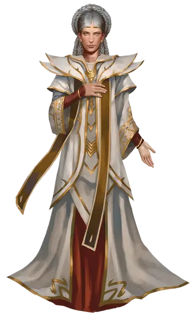

Лаэраль Сильверхенд
Laeral Silverhand
Средний Гуманоид (Человек), хаотично-добрый, именной НИП

Класс Доспеха 18 (мантия архимага)
Хиты 228 (24к8 + 120)
Скорость 30 футов
| мод | спас | ||
|---|---|---|---|
| СИЛ | 13 | +1 | +1 |
| ЛОВ | 17 | +3 | +3 |
| ТЕЛ | 20 | +5 | +5 |
| мод | спас | ||
|---|---|---|---|
| ИНТ | 20 | +5 | +11 |
| МДР | 20 | +5 | +11 |
| ХАР | 19 | +4 | +4 |
Навыки Восприятие +11, История +17, Магия +17, Проницательность +11, Убеждение +10
Сопротивление урону огонь
Иммунитет к урону яд
Иммунитет к состояниям отравление
Чувства истинное зрение 60 футов, пассивное Восприятие 21
Языки Общий, Великаний, Дварфийский, Драконий, Инфернальный, Эльфийский
Опасность 17 (18000 опыта)
Бонус мастерства +6
Особенности
Особое снаряжение. Лаэраль облачена в белую мантию архимага (указано в её стаблоке) и владеет языком пламени (длинный меч).
Сопротивление магии. Лаэраль совершает с преимуществом спасброски от заклинаний и прочих магических эффектов.
Использование заклинаний. Лаэраль является заклинателем 19-го уровня. Её базовой характеристикой является Интеллект (Сл спасброска от заклинания 21, +13 к попаданию атаками заклинаниями). У неё подготовлены следующие заклинания волшебника:
• Заговоры (неограниченно): волшебная рука, луч холода, малая иллюзия, свет, фокусы.
• 1-й уровень (неограниченно): волшебная стрела, маскировка, обнаружение магии, щит.
• 2-й уровень (неограниченно): невидимость, обнаружение мыслей, туманный шаг
• 3-й уровень (3 ячейки): контрзаклинание, полёт, послание, языки.
• 4-й уровень (3 ячейки): изгнание, высшая невидимость, Отилюков упругий шар.
• 5-й уровень (3 ячейки): конус холода, обет, ментальная связь Рэри.
• 6-й уровень. (1 ячейка): сфера неуязвимости, множественное внушение.
• 7-й уровень (1 ячейка): телепортация, радужные брызги.
• 8-й уровень (1 ячейка): слово силы: оглушение, слабоумие.
• 9-й уровень (1 ячейка): остановка времени
Действия
Мультиатака. Лаэраль совершает три атаки серебряными волосами и языком пламени в любом соотношении. Она может наложить один заговор или заклинание 1-го уровня до или после этих атак.
Серебряные волосы. Рукопашная атака оружием: +11 к попаданию, досягаемость 5 футов, одна цель. Попадание: 7 (2к6) урона силовым полем, и цель должна совершить спасбросок Телосложения Сл 19. В случае провала цель становится парализованной на 1 минуту. Цель может повторять спасборосок в конце каждого своего хода, в случае успеха данный эффект оканчивается.
Язык пламени. Рукопашная атака оружием: +7 к попаданию, досягаемость 5 футов, одна цель. Попадание: 5 (1к8 +1) рубящего урона плюс 7 (2к6) урона огнём или 6 (1к10 +1) рубящего урона плюс 7 (2к6) урона огнём, если атака совершается двумя руками.
Магическое пламя (перезарядка после продолжительного отдыха). Магическое серебряное пламя, безвредное и не дающее тепла, исходит из Лаэрали и окружает её, пока она не окажется недееспособной или сама не использует действие, чтобы погасить его.
Пока пламя существует, она получает одно из следующих преимуществ на свой выбор:
• Она может дышать под водой.
• Она может выживать без пищи и воды.
• Она невосприимчива к магии, читающей её мысли, проверяющей её правдивость, мировоззрение или тип существа.
• Она получает сопротивлению урону холодом и не получает вреда от температур до -45 °C.
Пока это серебряное пламя существует, Лаэраль имеет следующие дополнительные варианты действий:
• Накладывание заклинания лечение ран. Цель восстанавливает 1к8 + 5 хитов. После того как Лаэраль совершит это действие, бросьте к6. Если выпадает 1, серебряное пламя исчезает.
• Накладывание заклинания возрождение без материальных компонентов. После того как Лаэраль совершит это действие, бросьте к6. Если выпадает 1 или 2, серебряное пламя исчезает.
• Выпустить серебряное пламя в виде линии длиной 60 футов и шириной 5 футов или 30-футового конуса. Объекты в этой области, которые не носят и не несут, получают 26 (4к12) урона огнём. Каждое существо в этой области должно преуспеть в спасброске Ловкости Сл 21, получая 26 (4к12) урона огнём в случае провале и половину этого урона в случае успеха. После того как Лаэраль совершит это действие, бросьте к6. Если выпало 1,2 или 3 серебряное пламя исчезает.
Описание
Анаманюэ Лаэраль Сильверхенд родилась в Год Капюшона (765 ЛД). Она пятая из семи дочерей богини Мистры.
Все Семь Сестёр — могущественные и нестареющие красавицы, владеющие мистической магией.
Давным-давно Лаэраль правила королевством Стор- нантер и носила титул королевы-ведуньи Севера.
Позже она возглавила отряд искателей приключений, прозванный Девяткой. Она вышла замуж за Келбена Эрансана, который позже стал Чёрным Посохом, лордом-магом Вотердипа. После смерти Келбена Лаэраль долго не появлялась на публике. Она верну лась после Чумы Заклятий и Раскола, ослабленная смертью Мистры, её перерождением и уходом из мира.
Магия Лаэрали уже не та, что прежде, но она всячески старается это скрыть. Лишь Эльминстер, её старый друг и советник, знает, насколько её магия угасла. Но, несмотря на потерю способностей, Лаэраль остаётся грозной волшебницей с ясной головой, и магии у неё предостаточно.
Несколько лет назад Дагульта Неверембера отправили в отставку с должности Явного лорда Вотердипа. Лаэраль неохотно заняла его место по просьбе Лордов в масках и с тех пор служит Явным лордом. Поначалу она просто потонула в требованиях аристократов и магистров гильдий, но с тех пор неплохо вписалась в новую роль. Она редко пользуется магией и больше полагается на советников и помощников. Когда есть время, она маскируется и устраивает вылазки из дворца в Глубоководье, чтобы развеяться и проведать старых друзей (или врагов).
У Лаэраль непростые отношения с Ваджрой Сафар, нынешним Чёрным Посохом. Для начала, Лаэраль куда старше, мудрее и могущественнее Ваджры, которую считает неразумным ребёнком. К тому же Ваджра владеет Чёрным посохом, где заключена душа Келбена Эрансана и других Чёрных Посохов. Лаэраль мечтает завладеть посохом, ведь в нём всё, что осталось от её мужа. Стоит ли удивляться, что две волшебницы по возможности избегают встреч.
В случае великой нужды Лаэраль может приказать Ваджре использовать Серый Отряд. Пока такого приказа нет.
Серому Отряду запрещено действовать в Глубоководье. Однако шпионы докладывают Лаэрали, что Ваджра втайне использует членов этого элитного ордена и посылает их на недозволенные задания. Лаэраль не хочет идти на конфликт с Ваджрой из-за этого и оправдывает своё бездействие тем, что проверяет так компетентность Ваджры.